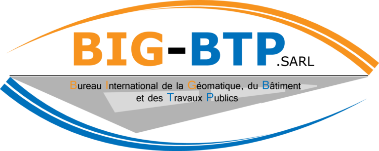

Parcours
Tout a commencé sur le terrain, à Abidjan — drone en main, GPS à l'épaule. Fraîchement diplômé de l'INPHB en tant que géomètre topographe, j'ai l'occasion de travailler sur des projets d'envergure : relevés LiDAR, bathymétrie et orthophotographies. C'est là que je pilote mon premier drone, et que je comprends le pouvoir de la donnée terrain.
La curiosité me pousse ensuite vers la géomatique. Je rejoins l'IUA d'Abidjan, où mes résultats me valent une sélection pour une double diplomation — un tremplin qui m'ouvre les portes de Nantes Université et d'un Master 2 en Géomatique, Environnement et Risque côtier.
Ce saut entre deux continents, deux systèmes de formation et deux façons de travailler m'a rendu adaptable, autonome et profondément convaincu que la géomatique est un outil stratégique — pas seulement technique. C'est lors de mon stage chez Naomis que tout prend une nouvelle dimension — au sens littéral. Travailler sur un SIG 3D pour le SDIS de Saint-Barthélemy m'a confirmé ma passion pour la modélisation 3D et les jumeaux numériques : cette capacité à reconstruire le territoire dans sa réalité volumique, pour mieux anticiper, décider et agir.
Aujourd'hui, je poursuis le Mastère Spécialisé SILAT d'AgroParisTech pour approfondir mes compétences techniques en SIG et en télédétection, tout en acquérant une vraie dimension managériale pour piloter des projets géomatiques complexes de bout en bout.

→ Août 2024
→ juin 2022
→ août 2021
Formation
Compétences métier
- GPS différentiel, station totale, niveau
- Levés bathymétriques (échosondeur)
- Pilotage, stéréo-préparation
- Traitement photogrammétrique & LiDAR
- Production d'orthophotos
- Modèles 3D texturés
- MNT / MNS / MNE
- Conception de chaînes de traitement
- Model Builder & Modeleur QGIS
- Structuration & valorisation
- Modélisation de données spatiales
- Analyse spatiale & statistique
- Sémiologie graphique
- Recueil des besoins métiers
- Solutions SIG opérationnelles
- Conception de solutions WebSIG
- Formation équipements topo & SIG
Logiciels
 GHGit / GitHub
GHGit / GitHub VSVS Code
VSVS Code OSuite Office
OSuite Office NNotion
NNotion